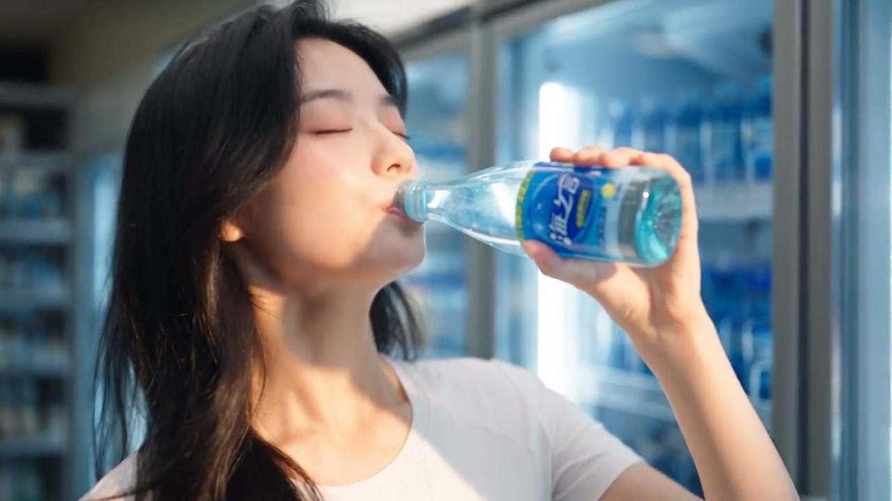

20 秒品牌 TVC · 以「口感即记忆」为叙事主轴，用高饱和生活场景建立钩子，中段以产品特写完成味觉联想的视觉转译，结尾落版强化品牌标识。个人 AI 概念广告创作。
核心逻辑是「口感即记忆」——开篇用一组高饱和生活化场景建立情绪锚点，让观众先被氛围感染；中段以产品特写完成味觉联想的视觉转译，把抽象的「好喝」翻译成可看的色彩与质感；结尾落版强化品牌标识与主张，完成一次干净利落的记忆植入。
结构遵循 TVC 标准节奏：前 3 秒钩子 → 中段卖点 → 尾版标识，在 20 秒内把信息密度压到最低、把记忆点拉到最高。
最终交付一支 20 秒品牌广告成片，适配视频号 / 抖音 / TV 贴片多端投放。画面以清新通透的蓝绿色调统一，产品始终处于视觉中心，品牌信息在尾版清晰落位。
